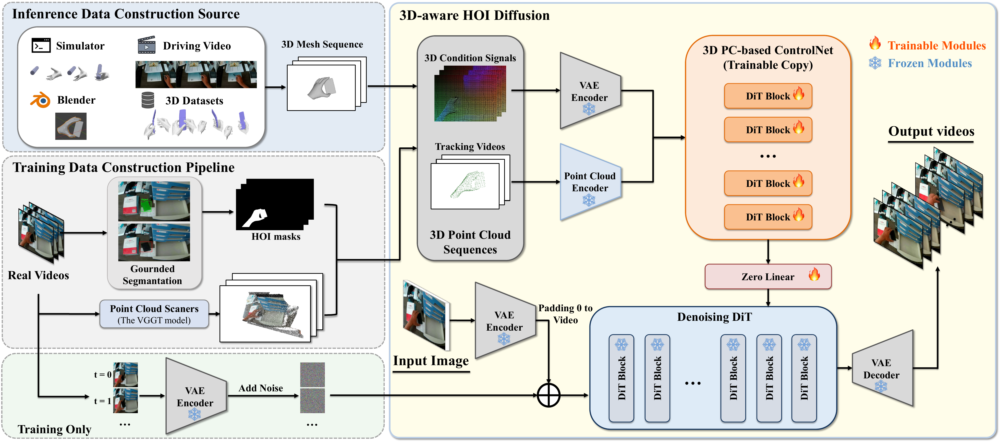

* Equal Contribution † Corresponding Author
HVG-3D features a 3D-aware diffusion architecture and a hybrid pipeline for constructing input and condition signals from both real and simulated data.

Figure. Overview of the HVG-3D framework. The model takes a single RGB image and a 3D condition signal (point cloud or tracking sequence) as input. A dedicated 3D ControlNet encodes geometric and motion cues, which are injected into the video diffusion backbone for high-fidelity, temporally consistent hand-object interaction video generation.
HVG-3D generates realistic, 3D-consistent hand-object interaction videos from a single image and a 3D control signal — from either real-world data or a simulator.
Demo video showcasing HVG-3D's ability to synthesize temporally coherent hand-object interaction videos conditioned on explicit 3D representations.